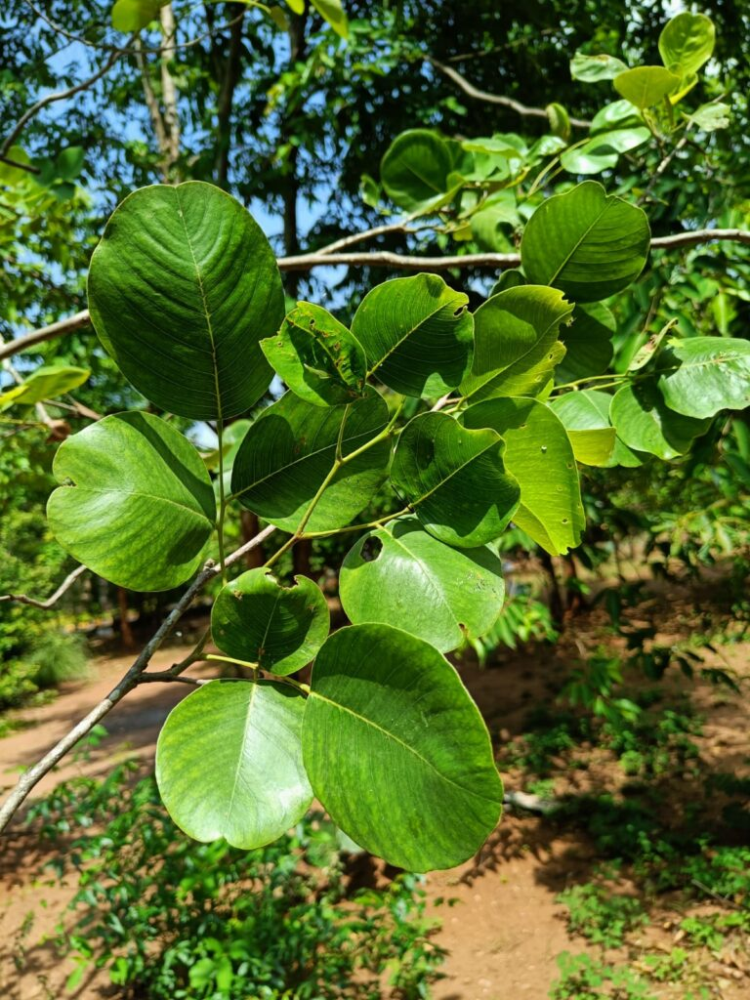

Overview of Raktachandana
Raktachandana, commonly known as Red Sandalwood (Botanical Name: Pterocarpus santalinus Linn), is highly valued for its therapeutic properties. Here’s a detailed look at this important Ayurvedic drug.
Basonym of Drug
Main Synonyms
- Raktanga
- Kshudrchandana
- Tilaparna
- Raktasara
- Pravalphala
- Ashukla Chandana
Regional Names
- Bengali: Rakta Chandana
- Gujarati: Ratanjali
- Hindi: Lal Chandana, Rakta Chandana
- Malayalam: Raktasandan
- Tamil: Shenchandan
- Telugu: Raktachandanam
- English: Red Sandalwood
Botanical Information
- Botanical Name: Pterocarpus santalinus Linn
- Family: Leguminoceae
- Classification (Gana):
- Aacharya Sushruta: Sarivadi, Patoladi, Priyangavadi Gana
- Aacharya Vagbhata: Patoladi Gana
- Bhavprakash Nighantu: Karpuradi Varga
External Morphology
A 15-30 feet high tree.
Useful Parts
Important Phytoconstituents
- Santalin-a and b
- Pterocarptriol
- Pterocarpodiolone
- Pterocarpol
- Lupenediol
Rasa Panchak
- Rasa: Tikta (Bitter), Madhura (Sweet)
- Guna: Guru (Heavy), Ruksha (Dry)
- Virya: Shita (Cold potency)
- Vipaka: Katu (Pungent taste conversion after digestion)
Action
Therapeutic Indications
- Jwarahara (Anti-pyretic)
- Dahaprashaman (Useful in burning sensations)
- Raktapittahara (Useful in skin and bleeding disorders)
- Sothahara (Anti-inflammatory)
Therapeutic Uses
- Raktarsha: Heartwood powder with milk is useful to treat bleeding piles.
- Sotha: Paste applied with water in inflammations, headaches, and wounds.
- Atisara: Decoction is useful to treat diarrhea.
Dose
- Powder: 3 to 5 gm
- Decoction: 50-100 ml
Formulations
- Pushyanuga Churna
- Lakshadi Ghrita
- Triphaladi Ghrita
Adverse Effects
Not Known
Remedial Measures
Not required
Purification
Not required